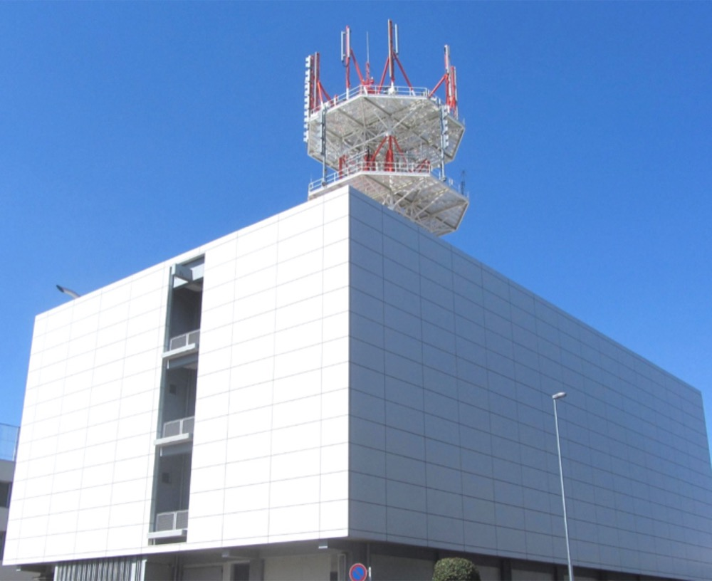
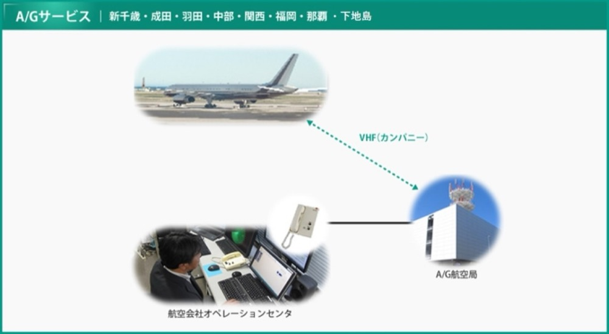
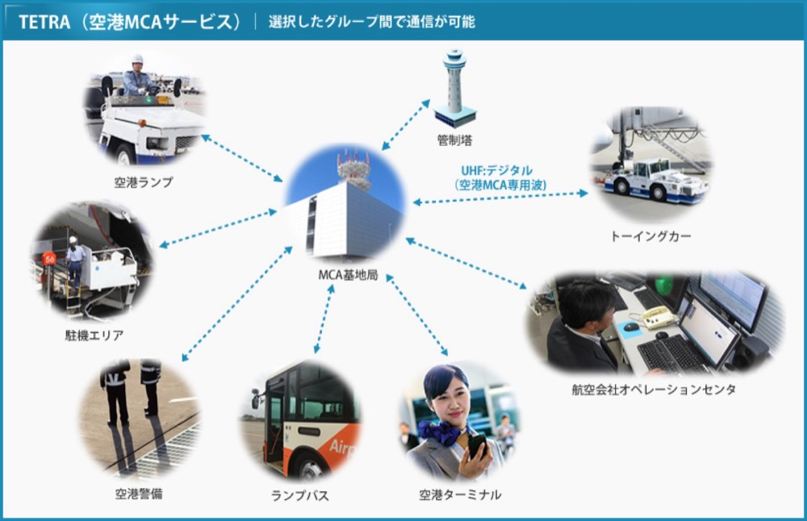

空の玄関口たらしめる航空無線技術とは
増澤 俊也
日本空港無線サービス 株式会社 サービスエンジニア
2022年5月、日本空港無線サービス株式会社に入社。サービスエンジニアとして設備更改計画の策定、設備設計、施工会社との契約、新旧設備の切り替えに伴うお客様対応を行っている。
企業サイトを見るTRACK 01
空の玄関口たらしめる航空無線技術とは

千葉県成田市にある成田国際空港。羽田空港と並んで言わずと知れた日本の空の玄関口であり、その利便性や規模、グランドスタッフのサービス品質など多岐に渡って世界中から高い評価を受けている。
そんな成田国際空港の開港に合わせて創設された企業である日本空港無線サービス株式会社は、常に空港関係各社、航空業界各社の声に耳を傾け、サービスの維持・向上を図り、成田国際空港の敷地内にオフィスを構えて活動している。主に電気通信事業と電気通信設備に関連するサービスを提供しており、特に空港内のコミュニケーション用無線通信サービスに特化しているのが特徴だ。
今もなお、日本の国際インフラを支え続けている日本空港無線サービス株式会社。航空業界で働くことを夢見て航空系学校に進学し、2022年に入社、現在サービスエンジニアとして活躍している山口さんに話を聞いてみた。
TRACK 02
40年以上の信頼と実績

日本空港無線サービス株式会社は、成田国際空港開港前年の1977年に、空港運営に必要となるパイロットと地上オペレーションセンター間の無線通信や空港内で働く方々のコミュニケーション用無線通信サービスを提供する会社として創業した。
以来航空業界の拡大と無線技術の進化とともに、システムの高度化と利便性向上をはかり、40年以上にわたって主要空港の業務と安全・安心を支えてきた。特にA/G無線電話サービスは、国内外の航空会社に広く利用されている。

TRACK 03
国内外で高く評価されている無線技術
パイロットと地上のオペレーションセンターを繋ぐA/G（Air to Ground）無線電話サービスは、国内外の航空会社を中心に日本全国13の拠点にて約170社が利用している。昨今は、運行管理拠点の集約や分散に対応したリモート接続の要望に応えるため、PC1台から複数空港の無線送受信可能なシステムをワンストップソリューションで提供している。
また、地上の様々な組織が利用している空港MCA無線サービスは、日頃の空港業務だけでなく、災害時の情報連絡手段としても重要な通信基盤であり、現在は成田国際空港、那覇空港、中部国際空港、関西国際空港といった日本の代表的な空港で利用されているという。
このサービスを支える公共安全向け業務用無線の国際標準方式の「TETRA」は、その品質と信頼性に高い評価を得ており、最近は国際的スポーツイベント開催期間のオペレーションや、感染水際対策の最前線である空港検疫業務の主要な連絡ツールとしても活躍している。またTETRAの相互接続機能を活かしたスマートフォン接続機能も好評で、テレワーク中の空港管理者様の業務状況把握や緊急連絡用として活用されることが期待されるという。